Online Disaster Warning System
Project Overview
Full-stack disaster monitoring web application built with Python and Streamlit that combines real-time alerts, interactive maps, user-generated incident reports, an information hub, and role-based administration to support emergency management and public safety.
Real-time Monitoring
Aggregates alerts from external feeds (e.g., GDACS), automatic weather thresholds, manual inputs, and user reports into a unified, real-time dashboard and interactive map.
Role-based Access
Supports unauthenticated users, subscribers, reporters, coordinators, and admins, each with tailored capabilities for viewing, reporting, validating, and managing alerts and news.
Targeted Notifications
Email-based subscription service that verifies users, stores location preferences, and sends personalized alerts when incidents or weather events affect their area.
Information Hub
Curated news, tips, and preparedness content stored in MongoDB and managed by admins/reporters to educate communities before and during emergencies.
User Requirements & Core Use Cases
Requirements were gathered iteratively and organized in Trello, covering both functional and non-functional aspects. The main functional requirements are captured as use cases for different actor roles:
Authentication & User Management
- User Login with role-based dashboards (Admin / Coordinator / Reporter).
- Admin creates new user accounts via secure, email-verified workflow.
- Session management and password hashing backed by MongoDB.
Interactive Map & Dashboard
- View Disaster Alert Map with interactive polygons and markers.
- Alert dashboard: sortable table, filters, metrics, and pie charts by disaster type.
- "Show My Location" to check whether the user is inside any alert area.
News & Information Hub
- Guests browse emergency information and preparedness tips.
- Admins/Reporters create, edit, and delete news articles with images and tags.
- Old content can be archived or removed to control storage.
Notifications & Subscriptions
- Guests subscribe using verified email and optional location.
- Subscribers can unsubscribe via UI or tokenized email link.
- System sends batched or on-demand alert emails for relevant incidents and weather events.
Incident Reporting & Validation
- Public users submit disaster reports with contact info, location, and optional images.
- Admins/Coordinators review, approve, or reject reports in a dedicated review UI.
- Approved reports create alerts; subscribers in affected areas are notified.
Alert Lifecycle Management
- Create Alerts: from external API, weather triggers, manual entry, or reports.
- Update Alerts: refine severity, timing, or description as new information arrives.
- Dismiss Alerts: mark incidents resolved or false alarm while keeping history.
Use Case Diagram
The use case diagram summarizes how unauthenticated guests, subscribers, reporters, coordinators, and admins interact with the system across authentication, map viewing, reporting, alert management, notifications, and content management.
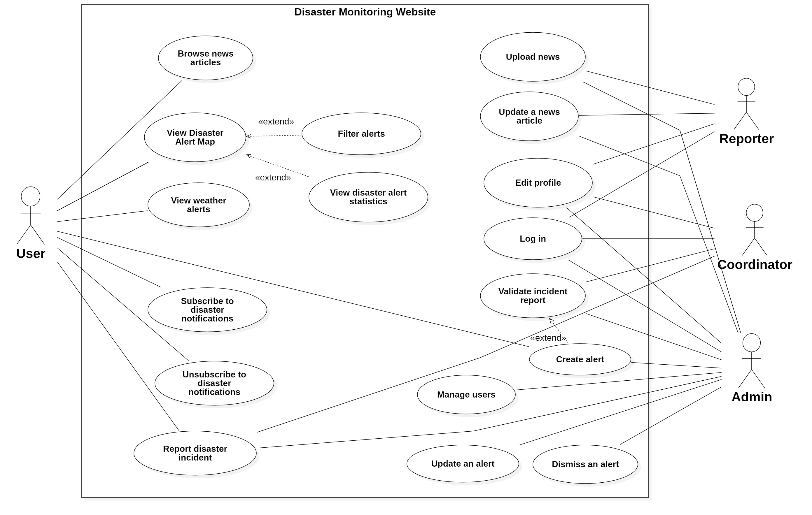
Layered Architecture
The application follows a layered architecture that separates concerns into presentation (Streamlit UI pages), business services (alert management, reporting, notification, authentication), persistence (repository layer), and database (MongoDB collections). This structure makes it easier to test, maintain, and extend the system.
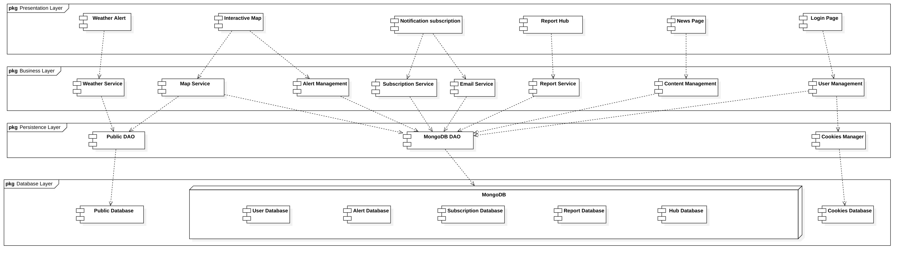
Key Sequence Diagrams
Sequence diagrams were created for the most critical workflows to validate interactions between UI, services, and the database:
User Login
Shows how credentials flow from the login UI to the authentication service and user repository, and how the system returns role-based dashboards or validation errors.
Incident Report Submission
Captures the end-to-end flow from user-submitted reports (including images) through validation and persistence into the reports collection, with notifications to admins.
Validate Incident Report
Shows how admins/coordinators load pending reports, review content and attachments, approve or reject them, and trigger alert creation plus subscriber notifications.
Notifications & Subscription
Details the email subscription flow (verification codes, database writes) and the alert email sending flow using the EmailService and SubscriptionRepository.
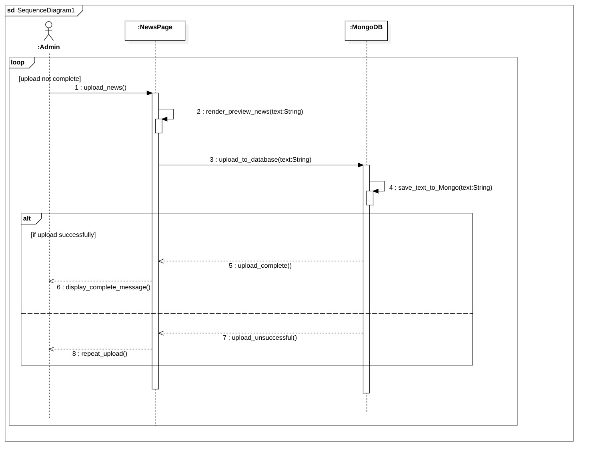
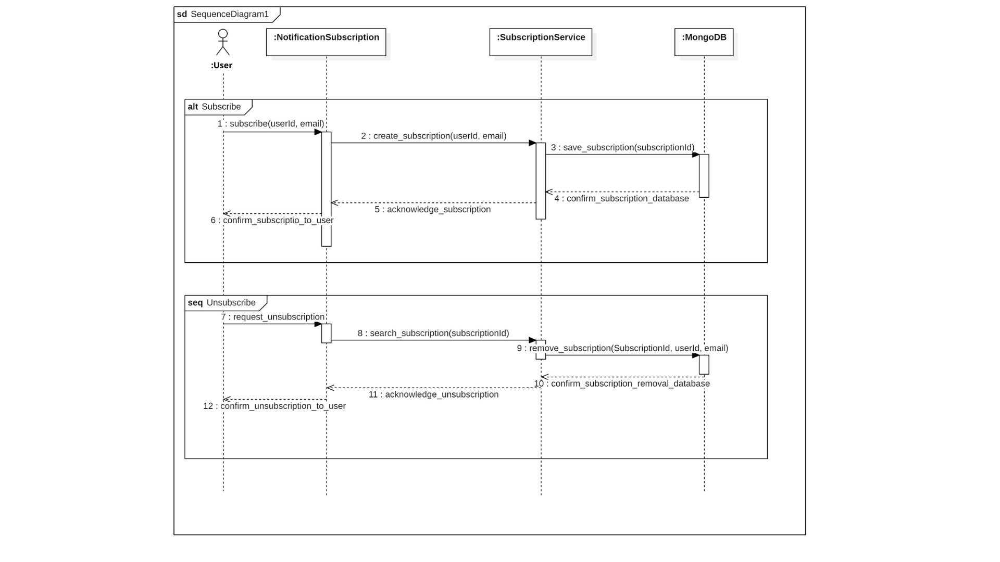
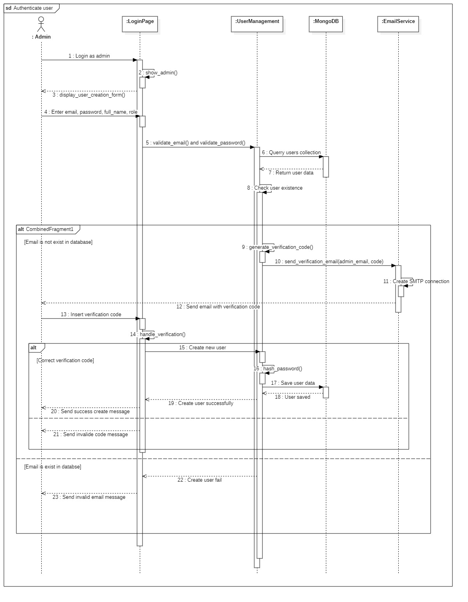
Database Schema & ERD
The backend is powered by MongoDB, organized into collections for users, reports, alerts, subscriptions, news, and notifications. Each collection is carefully designed to support fast querying for maps, dashboards, notifications, and admin workflows.
Key Collections
- admin: roles (Admin, Reporter, Viewer), emails, hashed passwords, timestamps.
- reports: disaster type, location (lat/lon, country, city), contact info, notes, images, timestamp.
- alerts: title, type, severity, geo-coordinates, description, created_at.
- subscriptions: subscriber email, location, subscribe_date.
- news: author, title, content, tags, publication date.
- notifications: subscriber email, alert reference, sent_date, content.
Entity Relationships
The ERD highlights how user-generated reports can lead to alerts, which in turn generate notifications to subscribers. Admins manage both news and users, while subscriptions link users to geography so that alerts can be matched to impacted regions.
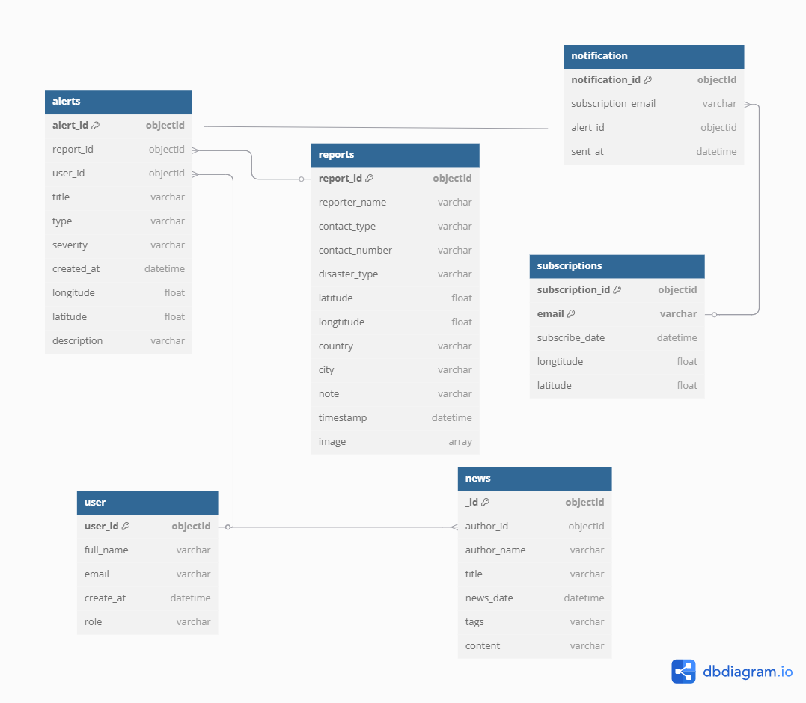
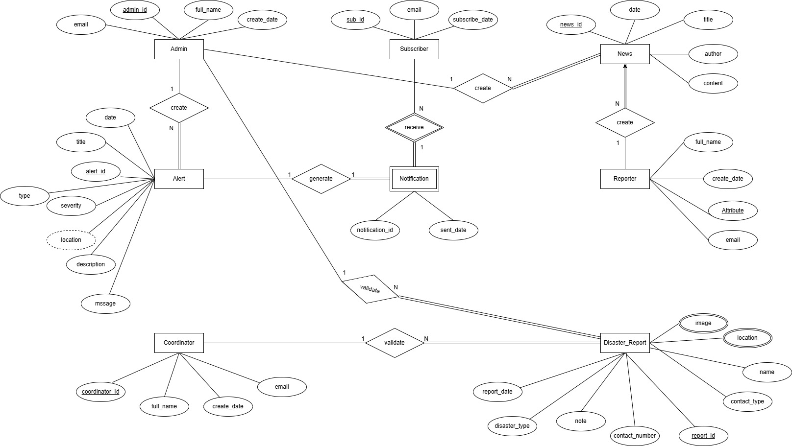
Quality Assurance & Testing
The project includes both backend unit tests (Pytest) and automated UI tests (Selenium) to validate core workflows and reduce regression risk.
Backend Testing (Pytest)
- Email validation, verification code generation, and subscription insertion.
- Sending verification and alert emails with mocked session services.
- Interactive map helpers: fetching GDACS data, country metadata, radius calculations, alert filtering and formatting.
- News hub: image extraction from markdown, article lookup, CRUD operations, and input validation.
- Report hub: encoding/decoding images, saving reports, and creating alerts from reports.
- Weather alert triggers: precipitation, UV index, high/low temperature, and combined alert scenarios.
UI Testing (Selenium)
- Automated navigation across key user pages: Alerts Monitoring Map, Notification Settings, Submit A Report, News, and Login.
- Screenshot capture for visual regression and layout verification.
- Admin login flow with form filling and navigation to admin-only views like Review Reports and Profile.
- Detected minor icon rendering quirks in the test environment (not present in real browsers).
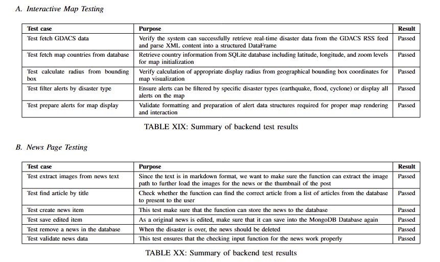
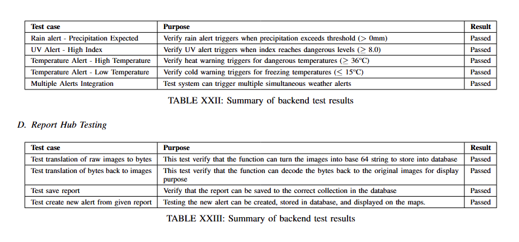
UI Mockups & Screens
The UI was prototyped and iterated with Streamlit, using custom theming and CSS to move beyond the default look. Below are example mockups and final screens for the main modules.

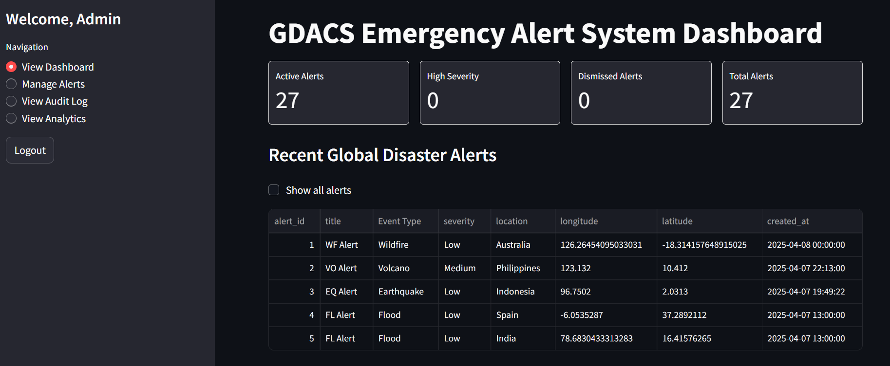
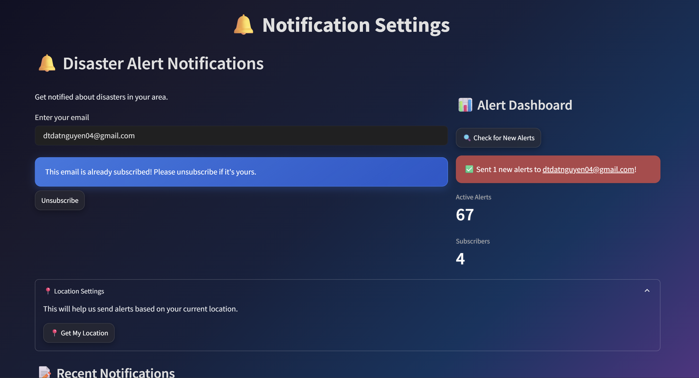
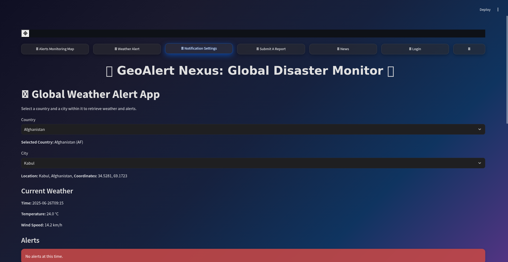
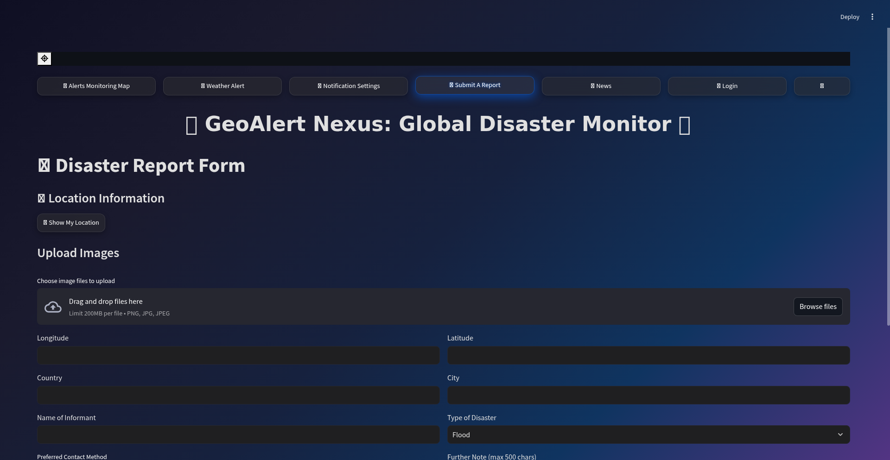
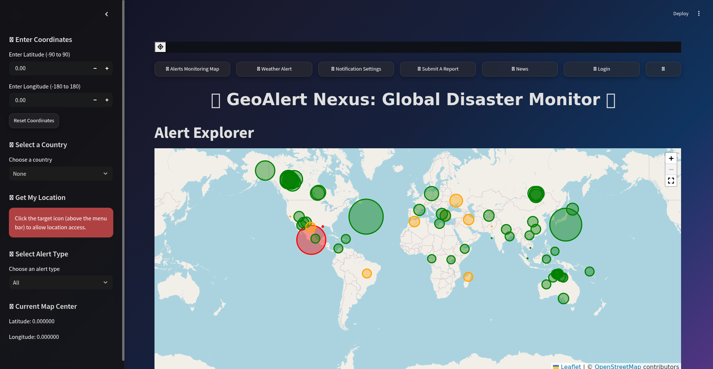
Deployment
The application is deployed on Streamlit Community Cloud and connected to a MongoDB backend. Source code is version-controlled on GitHub, and the environment is defined via a requirements.txt file. Streamlit automatically rebuilds the app when new commits are pushed, making it easy to iterate on features and architecture.